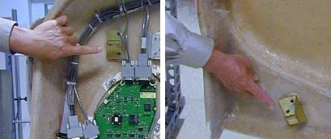

Illustration 15: Service Position of Upper and Lower Cantrell Brackets.

Illustration 15: Service Position of Upper and Lower Cantrell Brackets.
Illustration 16: Cover Retaining Pins (Top and Bottom)

Press down firmly on the bracket and snap it into place. The locking mechanism on each upper bracket should lock the bracket securely into place. Do this on both sides. See Illustration 17.
Illustration 17: Locking the cover brackets into place.